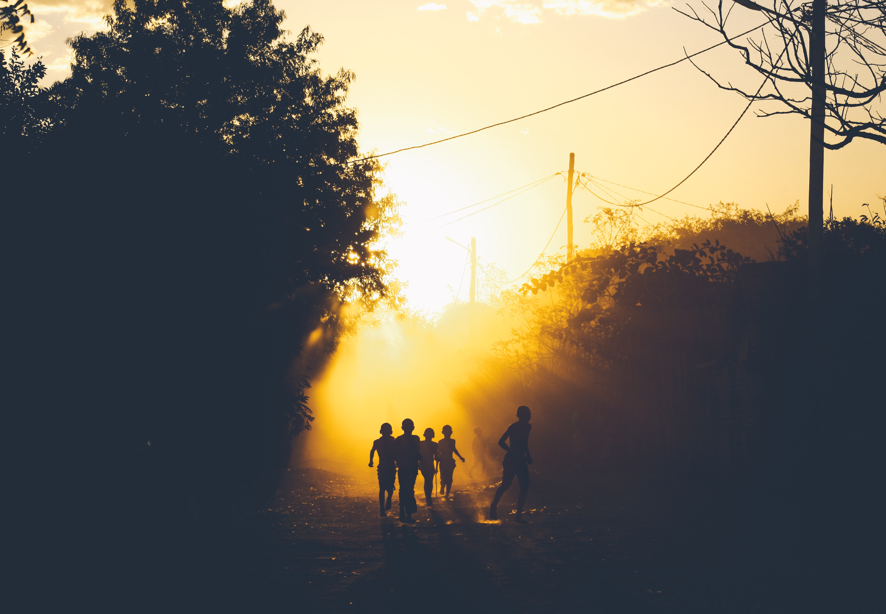

Let's Bridge The Gap
Our Mission
Undernutrition contributes to the deaths of over 3 million children and threatens the futures of millions more. We're a global organization on a mission to change that
BY NURTURING THE FUTURE CHANGE MAKERS OF THE WORLD.
Success Stories

In 2018, BountifulReached 13,000 Children.Conducted 400 Screenings. Provided 4,380,000 Supplements. And Sponsored 10 Studdents
They are all Our kids
The Bountiful Children's Foundation serves nearly 200 communities in 18 countries throughout the world.
Now lets match them with families that are ready to make a diference.
These families are ready to help!
Which there is no greater feeling then knowing you have changed someone life forever
Waiting Children
Resources
Join us!
Become a coordinator today!
